work4ERP 사용자 가이드 › Office Management
외부 방문객 신청 관리
주요 내용
- 외부 방문객 신청을 조회하고 승인·반려를 처리하는 관리자 화면입니다.
주의 사항
- 승인된 방문은 방문 일정에 맞춰 경비실에 안내됩니다. 처리할 신청 건을 체크한 뒤 버튼을 누릅니다.
기능 요약
- 기간 기준(방문일/신청일)·진행상태(신청·승인·반려·방문중·완료·취소)·부서·방문목적·출입 구역·VIP 주차·검색어 조회.
- 승인/승인취소/반려/반려취소.
1
'외부 방문객 신청 관리'을(를) 클릭합니다. 외부 방문객 방문 신청을 조회하고 승인·반려를 처리하는 관리 화면입니다. 방문일 또는 신청일 기준으로 조회할 수 있습니다.
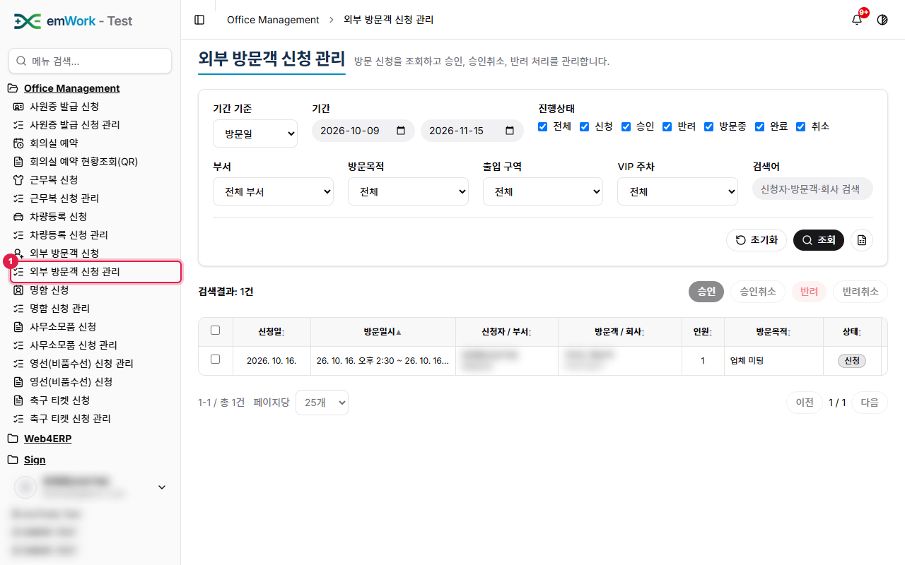
2
조회 조건을 정한 뒤 '조회'를 클릭합니다.
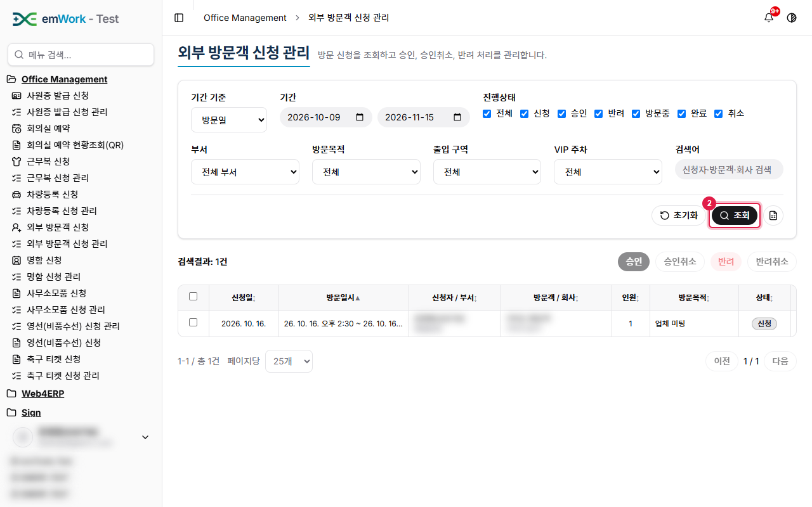
3
조회 결과가 목록에 표시됩니다.
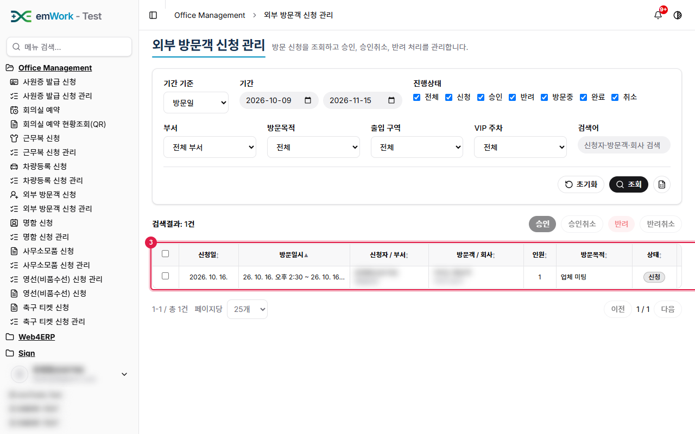
4
성명 등으로 조건을 좁혀 신청 건을 찾습니다.
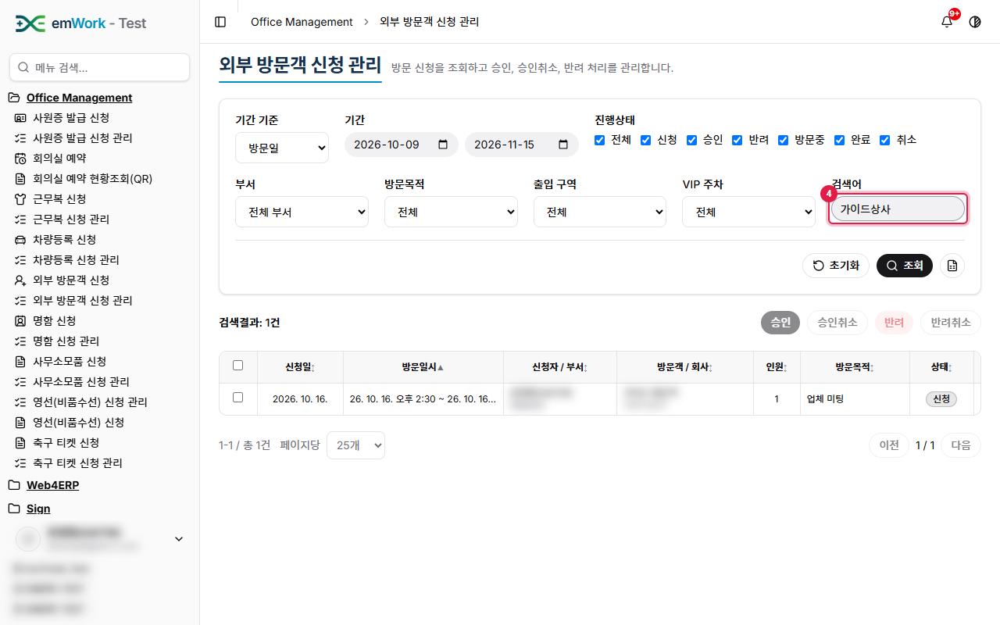
5
'조회'를 클릭해 조건에 맞는 신청 건만 표시합니다.
6
처리할 신청 건의 체크박스를 선택합니다. 선택하면 처리 버튼이 활성화됩니다.
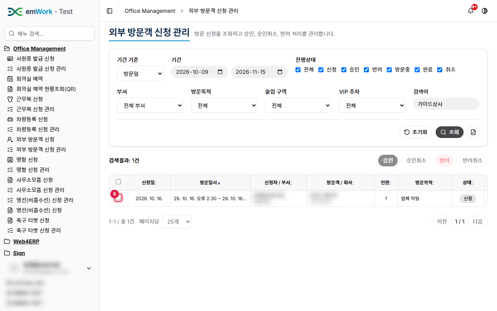
7
'승인' 버튼을 클릭하면 선택한 신청 건의 상태가 변경됩니다.
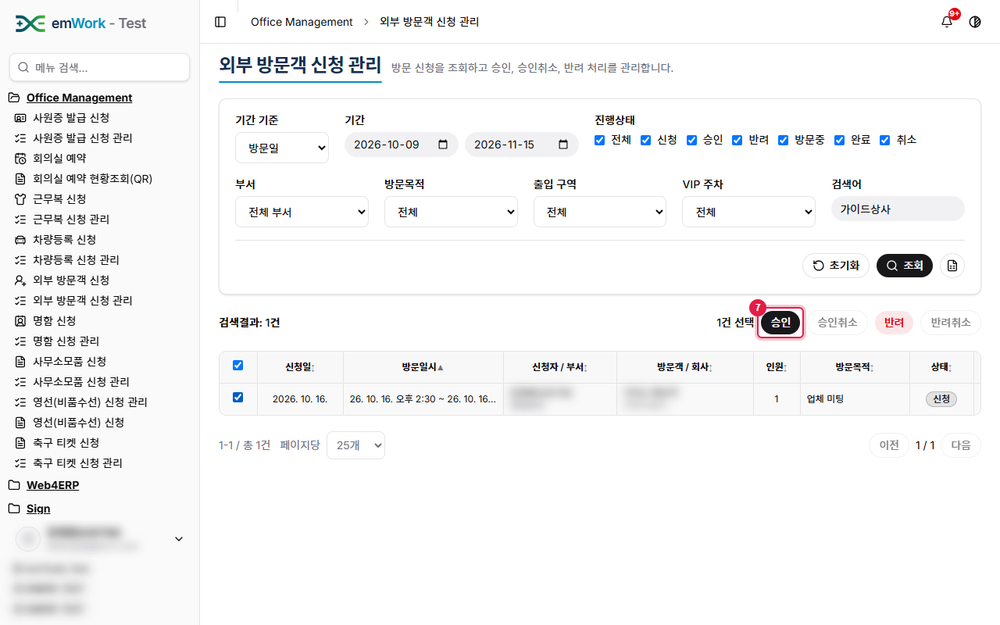
8
상태가 변경되면 완료 메시지(토스트)가 표시됩니다. 신청자에게는 알림이 전달됩니다.
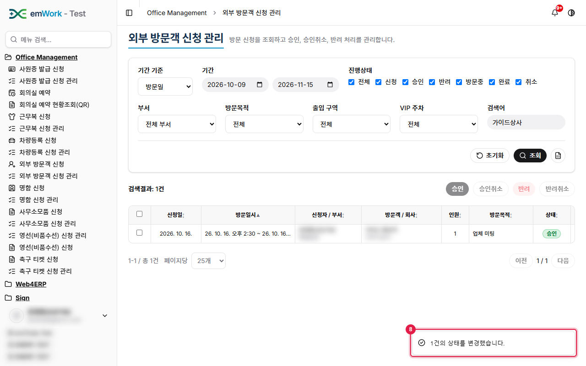
9
신청 건의 상태가 '승인'(으)로 바뀌었습니다.
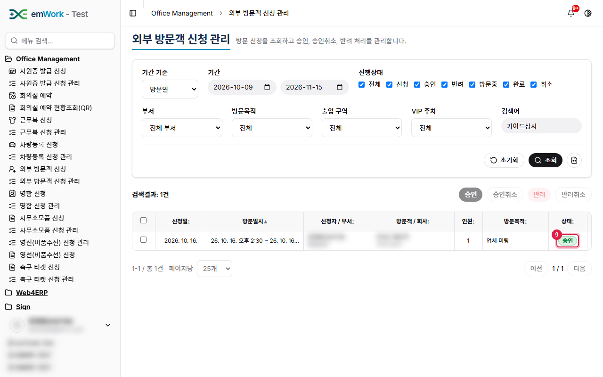
10
같은 신청 건을 다시 선택합니다.
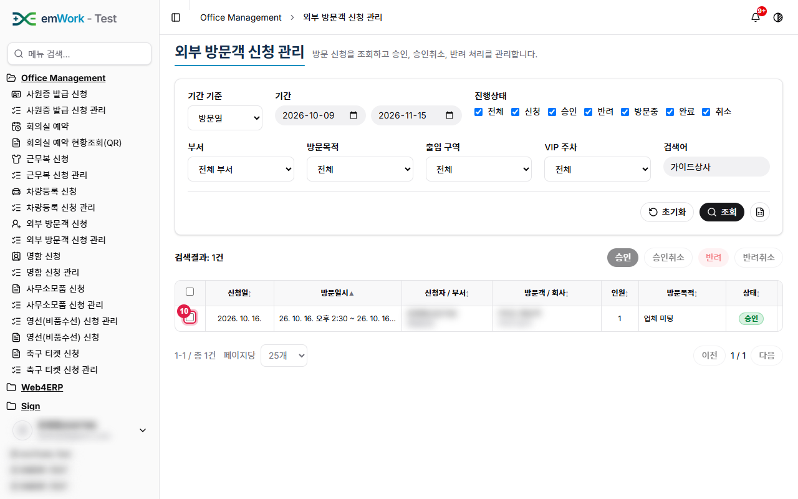
11
'승인취소'을(를) 클릭하면 이전 상태(신청)로 되돌릴 수 있습니다.
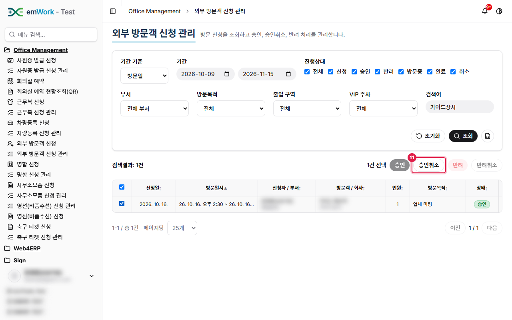
12
이전 상태로 되돌려졌다는 완료 메시지(토스트)가 표시됩니다.
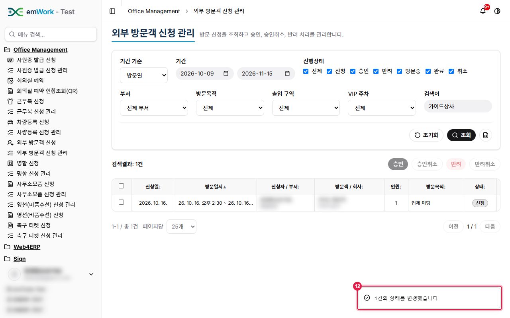